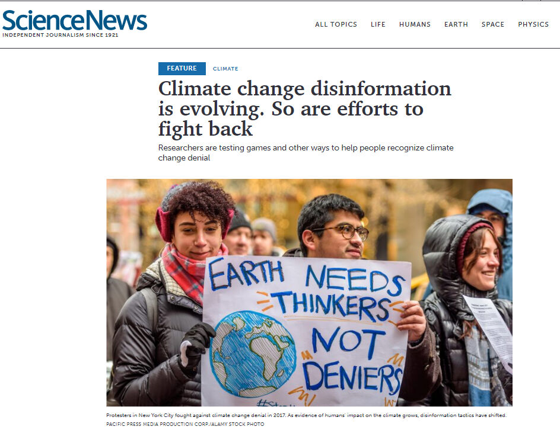

Trainees Edition
Trainers Edition
Trainees Edition
Trainers Edition
3.nodarbība: informācijas traucējumu cēloņi un sekas
Nodarbības apraksts
Šīs nodarbības galvenais mērķis ir iepazīstināt ar informācijas piesārņojuma cēloņiem un sekām, lai palielinātu studentu izpratni par informācijas piesārņojuma radīšanas motivāciju un tā iespējamo ietekmi.
Nodarbības sekundārais mērķis ir sniegt vadlīnijas pasniedzējiem, kuri vēlas izmantot nodarbības saturu, lai mācītu savus studentus.
Ņemot vērā šos moduļa mērķus, tiek apskatītas nepatiesas vai maldinošas informācijas radīšanas un izplatīšanas motivācijas un to ietekme uz sabiedrību un demokrātiju, kā arī norādījumi par mācību priekšmeta pasniegšanu.
Studenti, kuri būs sekmīgi apguvuši šo nodarbību, spēs:
- izprast informācijas piesārņojuma nolūku un motivāciju;
- izprast informācijas piesārņojuma sekas;
- izprast savu atbildību cīņā pret informācijas piesārņojumu/
Pasniedzēji, kuri būs sekmīgi apguvuši šo nodaļu, spēs izprast kā mācīt par informācijas traucējumu cēloņiem un sekām.
Nodarbības struktūra
Nodarbība sastāv no šādām daļām:
- nodarbības apraksts (mērķi, satura izklāsts un mācību rezultāti),
- nodarbības struktūra;
- vadlīnijas studentiem;
- vadlīnijas pasniedzējiem (kā sagatavoties; izmantojamās metodes; ieteikumi);
- saturs (mācību materiāli un vingrinājumi);
- tests;
- informācijas resursi (izmantotie avoti, ieteicamie avoti un video).
Galvenie nodarbības mērķi, satura izklāsts un mācību rezultāti ir raksturoti nodaļas apraksta daļā. Saturs ietver visus mācību materiālus un ar to saistītos uzdevumus. Tests sastāv no jautājumiem ar atbilžu variantiem, tas palīdzēs studentiem novērtēt savu progresu. Avoti sastāv no izmantotājiem avotiem un ieteicamajiem avotiem tālākai pētniecībai. Izmantotie avoti ir to materiālu saraksts, kas tikusi izmantoti mācību materiāla sagatavošanā. Ieteicamie avoti sastāv no papildu avotiem un video, kas ir ļoti ieteicami, lai uzzinātu vairāk par nodaļas tematu. Vadlīnijas studentiem iekļauj instrukcijas un ieteikumus studentiem. Vadlīnijas pasniedzējiem palīdz pasniedzējiem dažādās mācību procesa fāzēs un sniedz noderīgus ieteikumus.
Vadlīnijas studentiem
Studentiem jāizlasa teksts, jānoskatās rekomendētie video un jāizpilda vingrinājumi. Vēlams ieskatīties ieteicamajos avotos, lai uzzinātu vairāk par tematu. Pēc iepazīšanās ar nodarbības saturu, ieteicam veikt testu, lai novērtētu savu progresu. Ja nepieciešams pārskatīt mācinbu materiālu vēlreiz.
Vadlīnijas pasniedzejiem
Vadlīnijas pasniedzējiem ietver ieteikumus un padomus, kā izmantot šīs nodarbības saturu macību procesā par informācijasa traucējumiem.
Sagatavošanās
Ieteicams sagatavot prezentāciju (PowerPoint/Prezi/Canva) par nodaļas tēmu, kas papildināta ar vizuāliem materiāliem (attēli un videoklipi) un uzskatāmiem piemēriem. Ieteicams arī pielāgot šīs nodaļas piemērus un vingrinājumus, lai tie ir piemēroti mērķauditorijai. Vietējo piemēru izvēle (konkrētā valstī) saistībā ar pašreizējām vai labi zināmām problēmām palīdz skaidrāk ilustrēt jautājumu. Tas arī palīdz pievērst studentu uzmanību. Jo pazīstamāki un populārāki būs piemēri, jo labāk tiks nodots vēstījums. Vietējās (valsts) faktu pārbaudes platformas var būt labs avots to ziņu vai gadījumu izpētei, kas jau ir pārbaudītas un marķētas.
Nodarbības uzsākšana
Studentu iesaistīšanai var noderēt īss tests (3–5 jautājumi), izmantojot platformu Kahoot, vai atsevišķu jautājumu uzdošana, izmantojot Mentimeter. Jautājumi var kalpot gan kā motivējošs instruments, gan kā rīks, ar kura palīdzību iespējams apzināt studentu esošās zināšanas un izpratni par nodarbības tēmu.
Izmantojamās metodes
Mācību procesā var tikt izmantotas dažādas metodes, piemēram:
- Lekcija
- Diskusija
- Darbs grupās
- Pašrefleksija
Ieteikumi pasniedzējiem
Iesildīšanās
Lai efektīvi iesaistītu dalībniekus mācību procesā un vienotos par to, kas tiks apgūts nodarbības laikā, tās sākumā var iesildošus uzdot jautājumus par tematu informācijas traucējumu cēloņi un sekas.
Daži jautājumi, ko uzdot studentiem:
- kurš izplata nepatiesu informācijau?
- kāpēc cilvēki izplata nepatiesu informāciju?
- lūdziet sniegt piemēru par nopietnām dezinformācijas sekām, ar kurām viņi ir saskārušies;
- pajautājiet vai viņi kādreiz ir dalījušies ar nepatiesu informāciju. Ja jā, kāds bija viņu nolūks un motivācija?
Pēc diskusijas pārliecinieties, ka studenti spēj saprast nepatiesas un maldinošas informācijas radīšanas un izplatīšanas nolūku, kā arī noteikt to galveno motivāciju. Studentiem jāizprot, ka informācijas piesārņojumam vienmēr ir zināmas sekas un cilvēki, kas rada un/vai izplata nepareizu informāciju, ir atbildīgi par tās sekām.
Nodarbības mērķa paskaidrošana
Nodarbības mērķim ir jābūt skaidram, šajā gadījumā tas ir informēt par informācijas piesārņojuma cēloni un sekām. Pēc iesildošajiem jautājumiem būs vieglāk izskaidrot nodarbības mērķi.
Nodarbības satura izklāsts
Izklāstot nodarbības saturu, noteikti komunicējiet ar studentiem un mudiniet viņus aktīvi iesaistīties.
- Pirms sniedzat pārskatu par informācijas piesārņojuma motivācijām, lūdziet studentus paskaidrot iespējamos cēloņus.
- Sniedzot piemērus, izvēlieties reālās pasaules piemērus. Un izpētiet pēc iespējas vairāk informācijas par savu piedāvāto piemēru, lai pēc studentu lūguma jūs varētu paskaidrot sīkāk.
- Izvēloties piemērus, pārliecinieties, vai ir zināma motivācija un sekas, vai arī tās var skaidri noteikt. Dažos gadījumos galvenā motivācija var būt neskaidra.
- Sniedziet dažus piemērus (tie var būt arī izdomāti scenāriji) ar detalizētu informāciju un lūdziet dalībniekus izlemt, kādi cēloņi un sekas tie ir.
- Sniedziet dažus dezinformācijas piemērus (tie var būt arī izdomāti scenāriji) ar detaļām un lūdziet dalībniekus sīkāk izskaidrot iespējamās sekas.
Noslēgums
Sniedziet nodarbības kopsavilkumu un uzdodiet dažus jautājumus, kas palīdzētu izcelt būtiskāko satura izklāstā.
- Palūdziet studentiem aprakstīt kādu informāciju, ar kuru viņi ir saskārušies un kas sākotnēji šķita nekaitīga, bet vēlāk izrādījās, ka rada nopietnas problēmas.
- Pajautājiet studentiem, kāpēc ir svarīgi atšķirt uzticamu no maldinošas informācijas? (Īpaši politikas un sabiedrības veselības kontekstā)
Pēc diskusijas pārliecinieties, ka studenti spēj izprast galvenos dezinformācijas un misinformācijas izplatīšanas iemeslus un to sekas. Studentiem arī jāsaprot, ka kaitējums, ko var nodarīt nepatiesa informācija, var atšķirties, tomēr ikviens, kurš ar to dalās, ir atbildīgs par sekām
Saturs: Informācijas piesārņojuma cēloņi un sekas
Ievads
Izpratne par informācijas piesārņojuma nolūku un motivāciju ir svarīga, lai spētu ar to cīnīties. Nepatiesa vai maldinoša satura veidošanas un izplatīšanas pamatā ir dažādi nolūki un dažādas motivācijas. Piemēram, kā minēts 2. nodarbībā, dezinformācija (nepatiess saturs) un kaitnieciska informācija (īsta) tiek izplatīta ar nolūku, lai nodarītu kaitējumu (finansiālu, reputācijas, politisku vai pat fizisku), savukārt misinformācija (nepatiess saturs) netiek izplatīta, lai nodarītu kaitējumu, bet var nodarīt to netīši (Wardle, 2020). Neatkarīgi no tā, vai tas ir tīšs vai netīšs, informācijas piesārņojumam vienmēr ir sekas.
Izpratne par motivāciju
Nepatiesa un maldinoša satura veidošanai ir četras galvenās motivācijas: pirmā ir ideoloģiska (galvenokārt politiska). Nepatiess vai maldinošs saturs tiek izmantots propagandai, pārliecināšanai, uzmanības novēršanai un/vai provokācijai. Virzītājspēks šeit galvenokārt ir veidot un ietekmēt sabiedrisko domu, veicināt konkrētas idejas, ideoloģiju, partiju vai konkrētus cilvēkus (Allcott & Gentzkow 2017, 217. lpp.; Cooke, 2018; Wardle, 2020). Otrā motivācija ir finansiāla. Ir iespējams pelnīt naudu no reklāmas tīmekļa vietnē, izmantojot sensacionālu vai nepatiesu rakstu, virsrakstu vai attēlu. Šajā gadījumā klikšķi tiek virzīti, lai gūtu ieņēmumus. Nepatiess vai neobjektīvs saturs tiek veidots arī, lai reklamētu konkrētus produktus vai pakalpojumus, vienlaikus diskreditējot citus (Allcott & Gentzkow 2017, 217. lpp.; Wardle, 2020) Trešā motivācija ir sociāla un/vai psiholoģiska. Dažus cilvēkus motivē vienkārši vēlme sagādāt nepatikšanas. Viņi vēlētas redzēt, vai viņi var apmānīt žurnālistus un provocēt cilvēkus. Citi galu galā dalās ar misinformāciju, lai radītu noteiktu identitāti (Wardle, 2020). Viena no psiholoģiskajām motivācijām ir arī vajadzība patikt, lai gūtu tūlītēju gandarījumu un uzmanību sociālajos medijos (Cooke, 2018). Pēdējā motivācija, tāpat kā satīras un parodijas gadījumā, ir izklaide un humors.
Nepatiess saturs tiek veidots ar dažādiem nodomiem un motivācijām. Tas, kas tos padara vēl kaitīgākus, ir tā straujā izplatīšanās. Ja nepatiess saturs netiktu kopīgots, lai sasniegtu masu auditoriju, tas nodarītu mazāku kaitējumu (Wardle, 2020).
Informācijas piesārņojuma sekas
Viltus ziņu stāsti ir izplatīti internetā un var maldināt cilvēkus visā pasaulē. 2016. gadā veiktā aptauja atklāja, ka “viltus ziņu virsraksti apmuļķo amerikāņu pieaugušos aptuveni 75 procentos gadījumu (Silverman & Singer-Vine 2016). Dažos gadījumos cilvēki vienkārši ignorē viltus ziņas, ar kurām viņi saskaras, bet citos - tām notic. Viltus ziņas izraisa konkrētas darbības un nopietnas sekas, piemēram, ietekmē vēlēšanu rezultātus, kaitē demokrātijai, diskreditē personas, valstis, uzņēmumus un/vai izraisa paniku. (Tandoc, 2018, 137. lpp.).
Piemēri
1. piemērs: Marsa iebrukums
Labi zināms plaši izplatītas misinformācijas piemērs ir datēts ar 1930. gadiem, kad masveida paniku izraisīja Orsona Velsa pārraide “Pasauļu karš”. Orsons Velss stāstīja stāstu par Marsa iebrukumu radio ziņu formātā, aktieriem iejūtoties reportieru, iedzīvotāju, ekspertu un valdības amatpersonu lomās. Pārraides nodoms bija tikai radio drāmas producēšana, klausītāji to interpretēja kā patiesus ziņu faktus (Tandoc, 2018, 138. lpp.).

2. piemērs: Brexit referendums
Brexit referenduma rezultāti Apvienotajā Karalistē, 2016. gada prezidenta vēlēšanas ASV, Lepēnas iekļūšana Francijas vēlēšanu otrajā kārtā un Kenijas vēlēšanu izgāzšanās ir daži piemēri sistemātiskas misinformācijas kampaņu potenciālajam spēkam, lai gan empīriski dati par precīzu šādu kampaņu ietekmi nepastāv (Wardle & Derakhshan, 2017, 14. lpp.).
Brexit referenduma gadījumā prese sniedza nenovērtējamu atbalstu ar negatīvu stāstu plūsmu (galvenokārt nepatiesu) par migrantiem un ekonomisko slogu, ko izraisa dalība Eiropas Savienība. Politiķu un preses kampaņā par imigrāciju tika apgalvots, ka līdz 2030. gadam Lielbritānijā varētu ierasties līdz pat pieciem miljoniem ES migrantu, jo 88 miljoniem cilvēku tiks piešķirtas tiesības dzīvot un strādāt Apvienotajā Karalistē saskaņā ar plāniem atļaut Albānijai, Maķedonijai un Melnkalnei, Serbijai un Turcijai pievienotie Eiropas Savienībai. Galvenā viltus ziņa bija apgalvojums, ka, izstājoties no ES, Nacionālā veselības sistēma iegūtu 350 miljonu mārciņu nedēļā no Apvienotās Karalistes iemaksām ES kasē (Grice, 2017. gada 18. janvāris).
 |
 |
Avots: CNN, 2017. gada 8. maijs |
3. piemērs: Klimata pārmaiņu noliegšana
Šī ir pēdējo četrdesmit gadu laikā rūpīgi organizēta, labi finansēta kampaņa, ko galvenokārt darbina fosilā kurināmā rūpniecība. Kampaņa ir mēģinājusi diskreditēt zinātni, kas saista globālās klimata pārmaiņas ar cilvēku radītajām oglekļa dioksīda un citu siltumnīcefekta gāzu emisijām. Šie dezinformācijas centieni ir radījuši neskaidrības par datiem, apšaubījuši klimata zinātnieku integritāti un nolieguši zinātnisko vienprātību par cilvēku lomu (Renowden, 2014. gada 26. februāris). Pētījumu rezultāti pierāda, ka šis publiskais nepareizais priekšstats par klimata pārmaiņām ir samazinājis klimata pārmaiņu realitātes pieņemšanu un samazināja atbalstu ietekmes mazināšanas politikai (Cook, Lewandowsky & Ecker, 2017).
|  |  |
4. piemērs: Apple akciju cenas kritums
2008. gada 3. oktobrī iReport CNN veidotais pilsoņu žurnalistikas kanāls ziņoja, ka Stīvs Džobss pēc smagas sirdslēkmes tika steidzami nogādāts neatliekamās palīdzības nodaļā. Ziņojums tika izņemts vietnes, kad Apple informaciju noliedza. Stāsts vietnē palika tikai 20 minūtes (Blodget, 2008. gada 3. oktobris). Tomēr tas noveda pie uzņēmuma akciju cenas krituma par 10% (Chen, Conroy & Rubin, 2015).

2016. gadā kāds vīrietis ar ieroci iegāja picu restorānā Vašingtonā, ASV un raidīja tur vairākus šāvienus. Viņš pats centās izmeklēt, vai restorāns ir slepens pazemes cilvēku tirdzniecības tīkls, kurā iesaistīti Hilarijas Klintones prezidenta kampaņas dalībnieki, kā tas tika apgalvots sociālo mediju stāstos, kas patiesībā izrādījās fiktīvi (Silverman, 2016).

Avots: The New York Times
6. piemērs: Kodolbrīdinājums Izraēlai
Pakistānas aizsardzības ministrs Khawaja Muhammad Asif (Khawaja Muhammad Asif) publicēja draudīgu tvītu, reaģējot uz nepatiesu ziņojumu, kurā bija teikts, ka Izraēla draudējusi Pakistānai ar kodolieročiem (Goldman, 2016).

Avots: The Guardian: Graham-Harrison, 2016. gada 25. decembris
7. piemērs. Masu iznīcināšanas ieroči Irākā
Daudzi amerikāņi atbalstīja Irākas karus, pamatojoties uz dezinformāciju un apgalvojumiem par sakariem starp Irāku un Al-Qaeda un masu iznīcināšanas ieroču klātbūtni (Saunders, 2013).

8. piemērs: Uzbrukums ASV Kapitolijam
2020. gada 6. janvārī, kad valsts amatpersonas tikās, lai apliecinātu Džo Baidena uzvaru prezidenta vēlēšanās, Donalda Trampa atbalstītāji, kurus vienoja kopīga ticība nepatiesībai, ka Trampam tik nelikumīgi nozagtas vēlēšanas, iebruka Kapitolijā. Tā rezultātā gāja bojā pieci cilvēki (Hemsley, 2021). Bija simtiem ievainojumu, un vairāk kā 300 cilvēku ir apsūdzēti federālos noziegumos (Mendoza & Linderman, 2021). Uzbrukuma ASV Kapitolijam radīto zaudējumu atlīdzināšanas izmaksas un ar to saistītie drošības izdevumi ir pārsnieguši miljoniem dolāru (Chappel, 2021).
 |
 |
Avots: Wikipedia |
9. piemērs. Nāves draudi veselības aizsardzības ierēdņiem
Covid-19 uzliesmojuma laikā internetā tika izplatītas sazvērestības teorijas, apdraudot dzīvības. Dažādas sazvērestības teorijas, kas nav saistītas ar Covid-19 (fluorīds, chemtrails, 5G) radās, tiklīdz sākās pandēmija.Nepatiesi apgalvojumi par 5G tehnoloģiju izraisīja ļaunprātīgas sakaru torņu dedzināšanas un uzbrukumus telekomunikāciju darbiniekiem. Masu saindēšanās un hidroksihlorokvīna pārdozēšana - zālēm, par kurām pasaules līderi, piemēram, Donalds Tramps un Džeirs Bolsonaro (Jair Bolsonaro), nepatiesi apgalvoja, ka tās ārstē vai novērš Covid-19 (Spring, 2020. gada 26. decembris).
Visā pasaulē veselības aizsardzības amatpersonas ir saņēmušas nāves draudus pēc koronavīrusa apkarošanas pasākumu izsludināšanas. Infekcijas slimību eksperts Dr. Entonijs Fauči (Dr. Anthony Fauci) saņēma nāves draudus, jo viņš centās apturēt koronavīrusa izplatību ASV, sniedzot ieteikumus par sociālās distancēšanās pasākumiem, paplašinātām pārbaudēm un kontaktu izsekošanu. Austrālijā ar draudiem saskārās arī Kvīnslendas galvenā veselības darbiniece Žaneta Janga (Jeannette Young). Pēc tam, kad Janga slēdza Kvīnslendas robežas ar kaimiņvalstīm, pie viņas mājas tika izvietota policija. Vācijā eksperti, piemēram, Karls Lauterbahs (Karl Lauterbach) un Kristians Drostens (Christian Drosten), saņēma nāves draudus pēc tam, kad valsts pavasarī noteica mājsēdi un slēdza skolas. Kopš pandēmijas sākuma 2020. gada janvārī desmitiem sabiedrības veselības amatpersonu pameta amatu, aizgāja vai devās pensijā (Al-Arshani, 2020. gada 15. septembris).

10. piemērs: digitālā satura autora (influencer) koronavīrusa noliegums
Jaunizveidotie digitālā satura veidotāji ieguva milzīgu tiešsaistes sekotāju skaitu, popularizējot nepamatotus apgalvojumus par pandēmiju. Lielbritānijas sazvērestības kopienas līdere Keita Šemirani (Kate Shemirani) ir savākusi desmitiem tūkstošu sekotāju ar nepatiesiem apgalvojumiem, tostarp noliedzot koronavīrusa esamību, piedēvējot Covid-19 simptomus 5G radio viļņiem. Viņa ir runājusi ar tūkstošiem cilvēku protestos Londonā. Viņas dēls Sebastians Šemirāni (Sebastian Shemirani) sazinājās ar BBC, jo baidījās par mātes ietekmi uz sabiedrības veselību (Spring, 2020. gada 26. decembris).

Vingrinājumi
1. vingrinājums
Apsveriet dezinformācijas par globālajām klimata pārmaiņām iespējamās ietekmes un sekas tās noliegšanai.
2. vingrinājums
Tests
Izmantotie avoti
Al-Arshani, S. (September 15, 2020). Health officials worldwide are receiving death threats because of their work to educate the public and stop the spread of Covid-19. Insider.
Allcott, H. & Gentzkow, M. (2017). Social media and fake news in the 2016 election. Journal of Economic Perspectives, 31(2), 211–236. doi:10.1257/jep.31.2.211.
Blodget, H. (October 3, 2008). Apple denies Steve Jobs heart attack report: “It is not true”. Insider.
Chappel, B. (February 24, 2021). Architect Of The Capitol Outlines $30 Million in Damages From Pro-Trump Riot. NPR News.
Chen, Y., Conroy, N.J. & Rubin, V.L. (2015). Misleading online content: Recognizing clickbait as ‘false news’.” In Proceedings of the 2015 ACM on Workshop on Multimodal Deception Detection, Seattle, Washington, USA: ACM.
Cook, J., Lewandowsky, S., Ecker, U.K.H. (2017). Neutralizing misinformation through inoculation: Exposing misleading argumentation techniques reduces their influence. PLOS ONE 12(5): e0175799.
CNN (May 8, 2017). New Banksy Brexit mural unveiled on day of French vote. CNN.
Cooke, N. (2018). Fake news and alternative facts: Information literacy in a post-truth era. ALA.
Goldman, R. (2016). Reading Fake News, Pakistani Minister Directs Nuclear Threat at Israel. The New York Times. Available at:
Graham-Harrison, E. (December 25, 2016). Fake news story prompts Pakistan to issue nuclear warning to Israel. The Guardian.
Gramling, C. (May 18, 2021). Climate change disinformation is evolving. So are efforts to fight back. Science News.
Grice, A. (January 18, 2017). Fake news handed Brexiteers the referendum – and now they have no idea what they're doing. The Independent.
Hemsley, J. (February 8, 2021). When Fake News Turns Into Conspiracy Theories: The viral factor in today’s media landscape, and what we can do to stop it.
King, J. (September 20, 2020). Anti-mask protest leader is suspended nurse who compared lockdown to the Holocaust. Metro.
Mendoza, M. & Linderman, J. (March 5, 2021). Chaos of U.S. Capitol riot that left 5 people dead revealed. Global News. Available at:
Renowden, G. (February 26, 2014). Investigating climate change deniers and their spin against global warming. The Daily Blog.
Sandberg, M. (October 31, 2013). Historic Storytelling: Orson Welles scares the nation.
Saunders, L. (2013). Information as weapon: Propaganda, politics, and the role of libraries. In Mueller, D. M. (Ed.). Imagine, Innovate, Inspire: The Proceedings of the ACRL 2013 Conference, Indianapolis, IN: ACRL.
Silverman, C. & Singer-Vine, J. (2016). Most Americans who see fake news believe it, new survey says. Buzzfeed Poll About Fake News.
Silverman, C. (2016). Here are 50 of the Biggest Fake News Hits on Facebook from 2016. BuzzFeed.
Spring, M. (December 26, 2020). The casualties of this year's viral conspiracy theories. BBC News.
Tandoc, E.C., Lim, Z. W. & Ling, R. (2018). Defining “fake news”. Digital Journalism, 6(2), 137-153. DOI: 10.1080/21670811.2017.1360143
Wardle, C. & Derakhshan, H. (2017). Information disorder: Toward an interdisciplinary framework for research and policymaking. The Council of Europe.
Wardle, C. (2020). The Age of information disorder. In C. Silverman (Ed.). Verification Handbook for Disinformation and Media Manipulation, 3rd Ed. European Journalism Centre.
Zoroya, G. (February 14, 2019). Whatever happened to Iraq's weapons of mass destruction? USA Today.
Ieteicamie avoti
Cooke, N. (2018). Fake news and alternative facts: Information literacy in a post-truth era. ALA. Saunders, L. (2013). Information as weapon: Propaganda, politics, and the role of libraries. In Mueller, D. M. (Ed.). Imagine, Innovate, Inspire: The Proceedings of the ACRL 2013 Conference, Indianapolis, IN: ACRL.
Silverman, C. (2016). Here are 50 of the Biggest Fake News Hits on Facebook from 2016. BuzzFeed.
Tandoc, E.C., Lim, Z. W. & Ling, R. (2018). Defining “fake news”. Digital Journalism, 6(2), 137-153. DOI: 10.1080/21670811.2017.1360143.
Turcilo, L. & Obrenovic, M. (2020). Misinformation, disinformation, malinformation: Causes, trends and their influence on democracy. A Publication of Heinrich Boll Foundation.
Wardle, C. (2019). First Draft’s essential guide to understanding information disorder. First Draft.
Wardle, C. (2020). The Age of information disorder. In C. Silverman (Ed.). Verification Handbook for Disinformation and Media Manipulation, 3rd Ed. European Journalism Centre.
Wardle, C. & Derakhshan, H. (2017). Information disorder: Toward an interdisciplinary framework for research and policymaking. The Council of Europe.
Ieteicamie video
Wardle, C. (2020). The impact of sharing. FirstDraft.